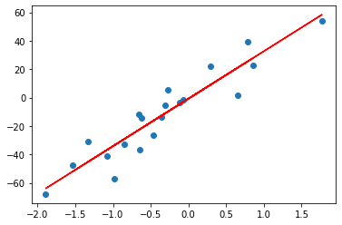

Contents
import numpy as np
from sklearn.linear_model import LinearRegression
from sklearn.datasets import make_regression
from matplotlib import pyplot
X_test, y_test = make_regression(n_samples=20, n_features=1, noise=10)
reg = LinearRegression().fit(X_test, y_test)
reg.score(X_test, y_test)
reg.coef_
reg.intercept_
reg.predict(np.array([[3]]))
array([246.79409981])
x=X_test.tolist()
y=y_test.tolist()
import pandas as pd
data = {'X':x,
'Y':y}
df=pd.DataFrame(data)
df.head(20)
| X | Y | |
|---|---|---|
| 0 | [-1.905367078833091] | -166.823846 |
| 1 | [2.093745599715919] | 181.684011 |
| 2 | [-0.25573679450399384] | -14.091684 |
| 3 | [-0.2138766874081489] | -9.116285 |
| 4 | [-0.6034054057860232] | -63.158314 |
| 5 | [-0.09233681028362165] | -24.248785 |
| 6 | [0.9577283394361303] | 75.035524 |
| 7 | [-0.2632890689849119] | -16.786992 |
| 8 | [-0.2823988624196276] | -17.341170 |
| 9 | [-0.28118034652050056] | 5.324927 |
| 10 | [-2.39777129916763] | -189.195834 |
| 11 | [-0.2226680483348731] | -8.249047 |
| 12 | [1.0698421161757057] | 75.835951 |
| 13 | [-0.6337097939232085] | -56.899935 |
| 14 | [-0.22645376418745328] | -18.262179 |
| 15 | [1.5972744649518071] | 133.045250 |
| 16 | [0.664025372790165] | 51.903105 |
| 17 | [0.7183866905594016] | 63.944227 |
| 18 | [0.5016668717953608] | 37.736703 |
| 19 | [-1.1579285300770048] | -81.394809 |
reg.coef_
array([81.67830529])
reg.intercept_
1.7591839471444963
pyplot.scatter(X_test,y_test)
Y_plot=reg.coef_*X_test+reg.intercept_
pyplot.plot(X_test,Y_plot,color='r')
pyplot.show()
